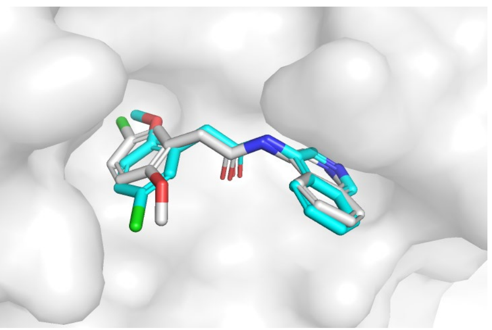
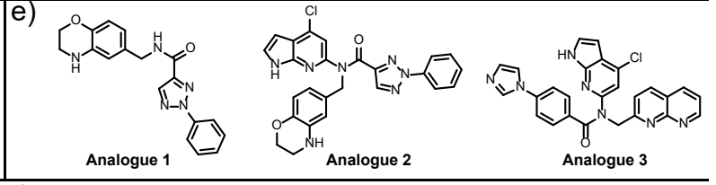
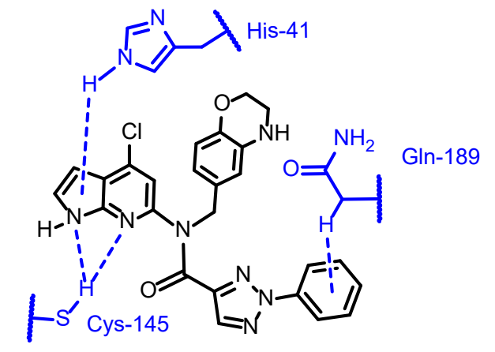
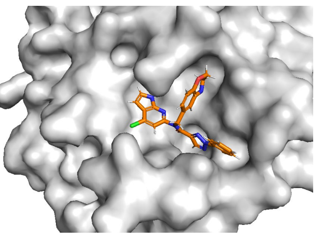
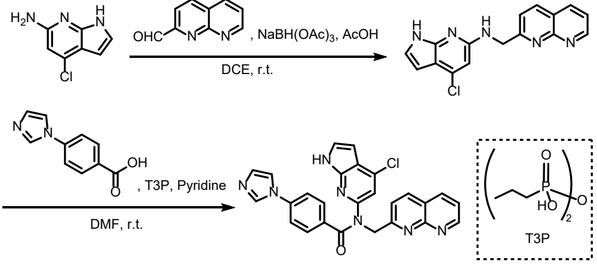

COMPUTATIONAL PROJECT / MODELLING COMPLETED · SYNTHESIS & ASSAY PROPOSED
Structure-Based Design of SARS-CoV-2 Main Protease Inhibitors
Molecular docking and structure-guided analogue design, with proposed routes to experimental validation.
Scientific motivation
SARS-CoV-2 main protease (Mpro) processes viral polyproteins and is a target for antiviral inhibitor design. This project examined non-covalent recognition: how a scaffold occupies the binding pocket and presents groups capable of favourable interactions.
Structure-based molecular modelling
The receptor was based on PDB 7S3K, containing Mpro bound to Z1530718726. PyMOL was used to inspect the crystal geometry. MOE QuickPrep added hydrogens, assigned protonation states and applied local minimisation before redocking and interaction analysis.
The co-crystallised ligand provided a reference for checking pose recovery. Docking used London dG placement scoring followed by GBVI/WSA rescoring and induced-fit refinement. These are docking calculations; molecular dynamics was proposed as further work.

Ligand evaluation
Manidipine, Ligand 1, Ligand 2 and the X0104 fragment were compared for subsite occupation, polar contacts, hydrophobic burial and orientation. The report describes Ligand 1 as a compact S1-binding scaffold with a His163 hydrogen-bond contact and His41 contact, suitable for a fragment-growing exercise.
Ligand 2 occupied a broader region of the pocket, while the bulky Manidipine pose illustrated why hydrophobic burial can favour a score without providing an equally convincing recognition pattern. Residues considered across the models included His163, Glu166, His41, Cys145 and Met165. These are model-based comparisons; literature activity values discussed in the report were not assays performed in this project.
Structure-guided molecular optimisation
Three analogues were designed from Ligand 1. Analogue 1 replaced an ester with an amide and introduced a heteroaryl extension. Analogue 2 expanded aromatic substitution to explore additional pocket space. Analogue 3 used a more directed terminal arrangement to explore contacts in the extended binding region.
The original structures below show the designs, while the selected Analogue 2 interaction map illustrates the predicted geometry. These annotations are computational hypotheses, not experimentally established interaction energies or inhibition mechanisms.



Beyond docking scores
Docking scores were treated as supporting evidence alongside pose inspection. A larger hydrophobic ligand may score well because of buried surface area; this does not establish affinity or selectivity. Molecular flexibility, retained-water orientation and the scoring function can alter the predicted pose and ranking.
The report observed sensitivity to small molecular changes. Experimental synthesis, biochemical inhibition measurements and additional structural evidence would be required to test the design hypotheses.
Proposed synthetic route
For Analogue 3, the report proposed reductive amination of an amine and aldehyde using sodium triacetoxyborohydride, followed by T3P-promoted amide coupling with the carboxylic-acid component. The original scheme retains the source reagents, conditions and molecular structures.
Status: synthetic planning only. This project did not establish that the designed Mpro analogue was synthesised or characterised.

Proposed biological evaluation
A FRET-based Mpro inhibition assay was proposed. Cleavage of a labelled peptide separates fluorophore and quencher, increasing fluorescence; an inhibitor would reduce the rate of signal increase. A concentration series and appropriate enzyme, substrate and inhibitor controls would support interpretation.
No assay outcomes or analogue IC₅₀ values were generated in this project.
Research perspective
The project connected pose analysis to specific molecular modifications and an experimentally testable plan. The next decision would depend on whether accessible synthetic products reproduce the predicted recognition pattern and inhibit Mpro in a controlled assay.
Sources & figure credits
Yihan Li, Evaluation of SARS-CoV-2 Main Protease Inhibitors Using Molecular Docking, supplied academic report. Figure crops retain the original scientific geometry and labels; report-template furniture is excluded. The report is an academic project, not a published journal article.
RCSB PDB 7S3K ↗ — reference crystal structure. Associated primary study: Glaser et al., Hit Expansion of a Noncovalent SARS-CoV-2 Main Protease Inhibitor (2022) ↗. Published experiments are background, not personal project results.